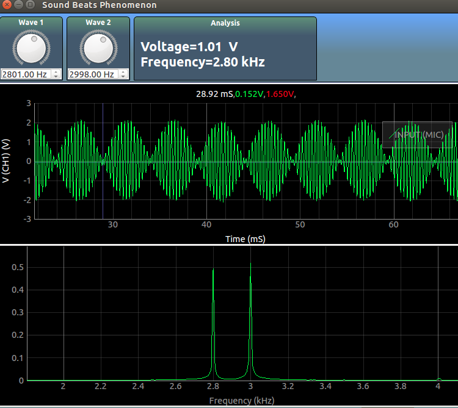

Explore sound beats

DC resistance
If two sounds with frequencies close to each other are played simultaneously, a third frequency corresponding to the gap between the two original frequencies can be heard.
Using two buzzers, and the two waveform generators, one can explore this phenomenon.
Connect a buzzer each to W1, and W2 , and set their frequencies such that the difference is in the audible range
e.g. , 3200Hz and 3000Hz will create a 200Hz beat, and this can be seen in the first graph
The signals recorded by the microphone are plotted as a function of time in the first graph.
The second plot shows a fourier transform of the recorded data. The X-Axis of the graph is frequency,
and the Y-Axis displays the amplitude of sound corresponding to that frequency.
Two peaks corresponding to the original signals can be observed.
Screenshot
